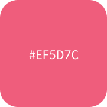
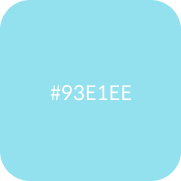
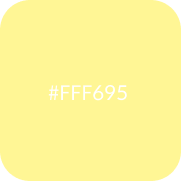

Main Color
- 
- 
- 
위니비니의 통통튀는 매력과 귀여움이 돋보일 수 있는 컬러를 사용하였습니다.
위니비니가 가지고 있는 귀엽고 컬러풀한 느낌을 살려 디자인하는 것이 목표였습니다.
또한 아기자기한 컨텐츠에 anmaiton과 JavaScript를 활용하여 정적인 페이지가 아닌
활동적이고 유쾌한 페이지를 만들고자 하였습니다.
Main Color
위니비니의 통통튀는 매력과 귀여움이 돋보일 수 있는 컬러를 사용하였습니다.
Sub Color
너무 강렬해 보이지 않도록 채도가 많이 높지 않되 다양한 컬러를 사용하여 컬러풀함을 표현하였습니다.
Font
영문은 위니비니의 매력을 보여줄 수 있는 Genty Demo를 사용하고
국문은 가독성이 좋은 Spoqa Han Sans Neo를 사용하였습니다.
평소 선호하던 심플한 디자인과는 달리 눈에 띄고 컬러풀한 디자인을 시도하고 싶었습니다.
그러다 보니 단순함과 과함의 경계선을 오고 가며 디자인 작업을 하는 것이 쉽지만은 않았던 것 같습니다.
하지만 한 가지 스타일에 갇히지 않고 새로운 디자인을 완성해 나가며 디자인에 대한 재미를 찾을 수 있었습니다.
또한, 여러 콘텐츠들로 디자인하는 만큼 많은 이벤트 효과도 사용하게 되었는데,
제가 의도했던 이벤트를 사용자의 입장에서는 제대로 인식하지 못할 수도 있다는 점에서 어려움을 겪기도 하였습니다.
그로 인해 웹 사이트를 제작할 때는 한 명의 시선이 아닌 여러 명의 시선을 생각하고 고려하여야 한다는 것을
깨달을 수 있는 좋은 경험을 쌓을 수 있었습니다.